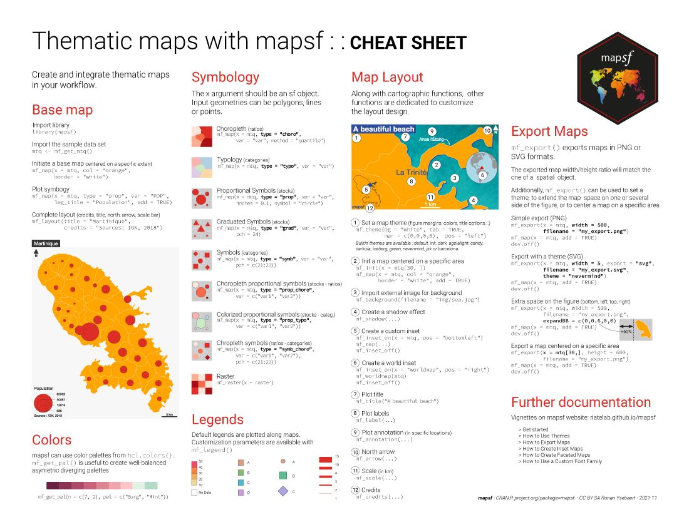

Valorisation : sémiologie
B. Maranget
13/03/2021
1 Une définition rapide de la sémiologie
Un ensemble standardisés de règle dont …
1.1 Première règle de sémiologie
1.2 La cheatsheet du package mapsf

2 Reprise des données sur le nombre de ménages
## Linking to GEOS 3.9.0, GDAL 3.2.1, PROJ 7.2.1## Reading layer `inseeBondy' from data source
## `C:\Users\tachasa\Documents\sauveGIT\03_coursDashboard\data\vote.gpkg'
## using driver `GPKG'
## Simple feature collection with 188 features and 42 fields
## Geometry type: POLYGON
## Dimension: XY
## Bounding box: xmin: 661088.1 ymin: 6865338 xmax: 663354.7 ymax: 6869043
## Projected CRS: RGF93 / Lambert-93## Classes 'sf' and 'data.frame': 188 obs. of 43 variables:
## $ IdINSPIRE : chr "CRS3035RES200mN2892800E3771800" "CRS3035RES200mN2892800E3770600" "CRS3035RES200mN2892800E3771400" "CRS3035RES200mN2892000E3770600" ...
## $ Id_carr1km: chr "CRS3035RES1000mN2892000E3771000" "CRS3035RES1000mN2892000E3770000" "CRS3035RES1000mN2892000E3771000" "CRS3035RES1000mN2892000E3770000" ...
## $ I_est_cr : int 0 0 0 0 0 0 0 0 0 0 ...
## $ Id_carr_n : chr "CRS3035RES200mN2892800E3771800" "CRS3035RES1000mN2892000E3770000" "CRS3035RES200mN2892800E3771400" "CRS3035RES1000mN2892000E3770000" ...
## $ Groupe : int 866428 866396 866443 866383 866447 866440 866400 866398 866402 866435 ...
## $ Depcom : chr "93057" "93010" "93010" "93010" ...
## $ I_pauv : int 0 0 0 0 0 0 0 0 0 0 ...
## $ Id_car2010: chr "CRS3035RES200mN2892800E3771800" "CRS3035RES200mN2892800E3770600" "CRS3035RES200mN2892800E3771400" "CRS3035RES200mN2892000E3770600" ...
## $ Ind : num 125 426 454 82 460 ...
## $ Men : num 49 178 142 29 167 135 232 188 294 72 ...
## $ Men_pauv : num 5 27 22 1 32 33 43 23 61 11 ...
## $ Men_1ind : num 14 59 23 4 43 36 92 62 99 11 ...
## $ Men_5ind : num 4 19 25 2 22 32 16 13 33 14 ...
## $ Men_prop : num 39 141 118 27 113 69 153 113 154 55 ...
## $ Men_fmp : num 2 17 15 3 14 13 21 13 34 10 ...
## $ Ind_snv : num 3057120 9996131 9921034 2298222 9454700 ...
## $ Men_surf : num 3584 11994 11172 2903 10615 ...
## $ Men_coll : num 13 107 9 0 76 58 162 133 246 17 ...
## $ Men_mais : num 36 71 133 29 91 77 70 55 48 55 ...
## $ Log_av45 : num 33 70 48 2 112 55 103 32 82 46 ...
## $ Log_45_70 : num 7 7 13 0 31 53 15 136 24 17 ...
## $ Log_70_90 : num 5 6 13 27 14 7 53 18 11 6 ...
## $ Log_ap90 : num 4 95 68 0 10 20 61 2 177 3 ...
## $ Log_inc : num 0 0 0 0 0 0 0 0 0 0 ...
## $ Log_soc : num 0 0 8 0 8 58 1 0 41 0 ...
## $ Ind_0_3 : num 7 20 32.5 5 49 27 30 41 42.5 18 ...
## $ Ind_4_5 : num 4 9.5 13 2 12 14 13 14 28 9 ...
## $ Ind_6_10 : num 7 22.5 33 8 33 26 31 32 51 22.5 ...
## $ Ind_11_17 : num 8 36.5 51.5 5 35 47 35 24 48.5 23 ...
## $ Ind_18_24 : num 9 27 32 1 22 33 23.5 21 45 16 ...
## $ Ind_25_39 : num 30 84 86 17 116 74 135 138 199 45 ...
## $ Ind_40_54 : num 23 101 95 12 71 98 93 76 139 47 ...
## $ Ind_55_64 : num 15 66 58 16 57 56 62 47 89 20 ...
## $ Ind_65_79 : num 11 34 31 11 45 41 58 29 62 14 ...
## $ Ind_80p : num 9 14 11 3 20 15 34 26 28 8 ...
## $ Ind_inc : num 2 11 11 2 0 20 5 5 8 11 ...
## $ I_est_1km : int 0 0 0 0 0 0 0 0 0 0 ...
## $ code_insee: chr "11" "11" "11" "11" ...
## $ nom : chr "Île-de-France" "Île-de-France" "Île-de-France" "Île-de-France" ...
## $ nuts2 : chr "FR10" "FR10" "FR10" "FR10" ...
## $ wikipedia : chr "fr:Île-de-France" "fr:Île-de-France" "fr:Île-de-France" "fr:Île-de-France" ...
## $ surf_km2 : num 12069 12069 12069 12069 12069 ...
## $ geom :sfc_POLYGON of length 188; first list element: List of 1
## ..$ : num [1:5, 1:2] 663324 663343 663144 663125 663324 ...
## ..- attr(*, "class")= chr [1:3] "XY" "POLYGON" "sfg"
## - attr(*, "sf_column")= chr "geom"
## - attr(*, "agr")= Factor w/ 3 levels "constant","aggregate",..: NA NA NA NA NA NA NA NA NA NA ...
## ..- attr(*, "names")= chr [1:42] "IdINSPIRE" "Id_carr1km" "I_est_cr" "Id_carr_n" ...Le choix de la variable est celui du nombre de ménages pauvres.
3 Discrétisation : étudier sa distribution
## Min. 1st Qu. Median Mean 3rd Qu. Max.
## 0.00 11.00 22.00 32.82 42.00 294.00
Cette distribution permet de distinguer dans le groupe des très pauvres les différentes catégories.
4 Cartographie
Reprendre le bonus cartographique du devoir et essayer de faire la carte.
L6ECSIG Construction et utilisation des SIG